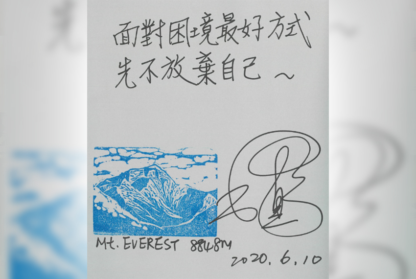
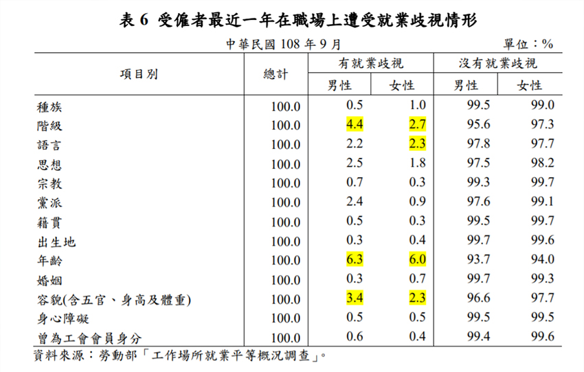

|  |
「用有限的生命去做有恴義的事情，珍惜下與你共事的人。當你真心渴望某件事時，全宇宙都會聯合起來幫助你。」 「一旦你相信自己，就知道怎樣過活。」 「人的一生不能沒有勇氣，你所做的不一定要偉大到改變全世界，但只要能影響周遭的人就夠了。」 |
為持續推動完善職場性別平等、尊重多元的公司政策，2020年CSRO與研發人力資源小組溝通討論，規劃兩場性別平等主題的活動。第一場性平講座邀請到全世界第一位成功地二次攻頂海拔高度8848公尺的聖母峰，女性登山家江秀真老師。她是全球第33位登上聖母峰的女性登山家，全世界第675名登頂的登山家。她也是全球第一位完成攀登世界七大洲頂峰的女性、並從南側及北側路線完成聖母峰二次登頂的女性登山家。她真摯地分享她如何自我管理，自我激勵，一直在實踐夢想的道路上前進著。
做自己喜歡的事是快樂的！重達五公斤的登山鞋，是江秀真老師最愛的高跟鞋。登山已融入生命，登山就是生活。面對生命中遭逢的低谷，她始終樂觀面對，把握每一個機會，告訴自己：「嚴苛的條件才值得挑戰！」，每突破一個困境，想到所超越的，是自己之後面對困難的能力。她發揮女性特有的韌性，真心分享她的熱情，始終如一的保有初心，不間斷的努力學習，精進專長得以充份發揮，只為實現夢想的藍圖。
第二場針對性別平等主題，安排「翻轉幸福」電影賞析。在張譯文講師的引導之下，深入在父權社會的年代女性發明家Joy Mangano實踐她的夢想-發明魔術拖把的真實故事。現實世界中，女主角Joy成功之後，仍致力於發明，還擁有100多項發明專利。她的企業也為更多有創意的發明家，不分性別、不分人種，搭起翻轉幸福的橋樑，幫助更多人實踐夢想。
由女性企業家Joy的故事，我們也再次驗證女性韌性的強度是男性所不能及！張譯文講師也分享在之前金融海嘯的統計資料，留存企業的女性企業家比例高過男性企業家，充份突顯女性強大堅韌特質，讓失敗不是成功的反面，失敗只是成功的一部份。有創意､有研發精神､還要有行動力！用行動力讓夢想實踐，用真心將美好的事物與更多人分享 。
登頂世界最高峰的女性身影，就和科技研發的女性主管一樣，已逐年增加。根據2019年8月勞動部公布的「僱用管理就業平等概況調查及工作場所就業平等概況調查報告」事業單位對 「管理職」的男女錄用比例，員工規模250人以上的公司已達97.4%男女都會錄用；而受僱者在職場上93.7%以上没有就業岐視狀況。
|  |
公司是RBA責任商業聯盟(Responsible Business Alliance,原EICC)的會員之一，秉持商業道德以誠信經營，重視所有勞工的人權，不岐視、尊重個人宗教信仰、同仁們的工資與福利皆符合相關的薪酬法規，重視同仁們的健康與安全，持續改進以提供大家安心工作的環境。
公司有很多優秀的同仁，今年七月份投資人關係部張妍婷副處長，是台灣第一位獲得IRC證照( Investor Relations Charter )的專業人才！在兼顧家庭生活與繁忙工作，還能精進學習的精神，真心令人佩服。在企業的公司治理，IR(投資人關係)為公司與投資人建立良好的誠信溝通管道，也是實踐企業社會責任，展現公司投資價值與股東價值最大化的重要永續力。
發揮天賦、熱情、價值是個人成長的重要事情。找到你的天賦所在、熱情所在，坦然面對人生中的不完美，讓自己的生命更美麗。公司珍視每一位同仁在工作上的努力與發揮所長，也給予兩性機會均等、發揮才能的機會。只要你正心正念的堅定目標、相信自己，不間斷的學習與創新精進，重視與團隊伙伴們溝通合作，永不放棄。